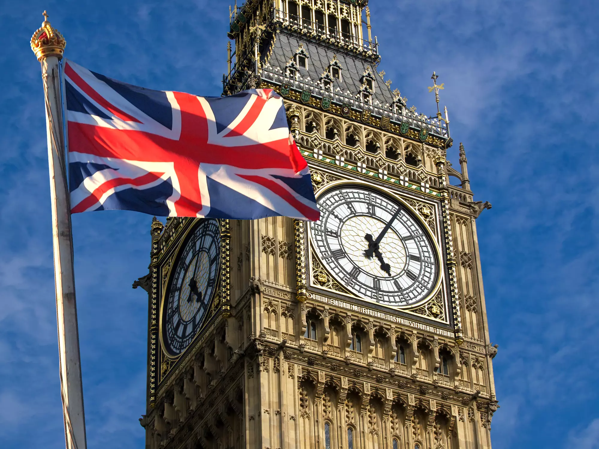
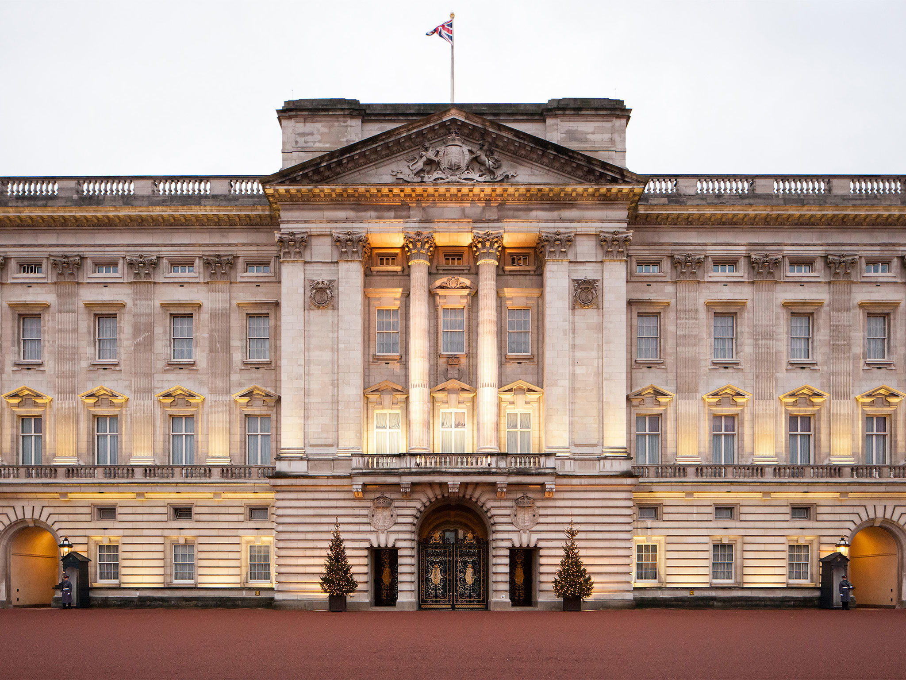

London
Rzym Los Angeles London

London[c] is the capital and largest city[d] of both England and the United Kingdom, with a population of 9.1 million people in 2024.[2] Its wider metropolitan area is the largest in Western Europe, with a population of 15.1 million.[4] London stands on the River Thames in southeast England, at the head of a 50-mile (80 km) tidal estuary down to the North Sea, and has been a major settlement for nearly 2,000 years.[7] Its ancient core and financial centre, the City of London, was founded by the Romans as Londinium and has retained its medieval boundaries.[e][8] The City of Westminster, to the west of the City of London, for centuries has been as the site of the national government and parliament. London grew rapidly in the 19th century, becoming the world's largest city at the time. Since the 19th century[9] the name "London" has referred to the metropolis around the City of London, historically split among the counties of Middlesex, Essex, Surrey, Kent and Hertfordshire.[10] Since 1965 it has largely comprised the administrative area of Greater London, governed by 33 local authorities and the Greater London Authority.[f][11]
Big Ben

Big Ben is the nickname for the Great Bell of the Great Clock of Westminster,[1][2] and, by extension, for the clock tower which stands at the north end of the Palace of Westminster in London, England.[3][4] Originally named the Clock Tower, the structure was renamed the Elizabeth Tower in 2012 to mark the Diamond Jubilee of Queen Elizabeth II. The clock is a striking clock with five bells.[2]
Buckingham pallace

Buckingham Palace (UK: /ˈbʌkɪŋəm/)[1] is the official residence and the administrative headquarters of the monarch of the United Kingdom in London.[a] Located in the City of Westminster, the palace is often at the centre of state occasions and royal hospitality. It has been a focal point for the British people at times of national rejoicing and mourning.